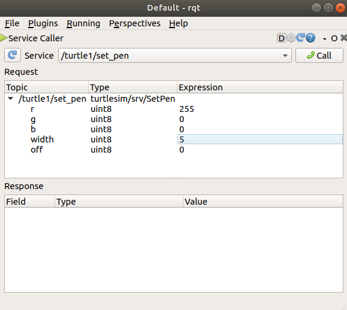

Using turtlesim, ros2, and rqt
Goal: Install and use the turtlesim package and rqt tools to prepare for upcoming tutorials.
Tutorial level: Beginner
Time: 15 minutes
Contents
Background
Turtlesim is a lightweight simulator for learning ROS 2. It illustrates what ROS 2 does at the most basic level to give you an idea of what you will do with a real robot or a robot simulation later on.
The ros2 tool is how the user manages, introspects, and interacts with a ROS system. It supports multiple commands that target different aspects of the system and its operation. One might use it to start a node, set a parameter, listen to a topic, and many more. The ros2 tool is part of the core ROS 2 installation.
rqt is a graphical user interface (GUI) tool for ROS 2. Everything done in rqt can be done on the command line, but rqt provides a more user-friendly way to manipulate ROS 2 elements.
This tutorial touches upon core ROS 2 concepts, like nodes, topics, and services. All of these concepts will be elaborated on in later tutorials; for now, you will simply set up the tools and get a feel for them.
Prerequisites
The previous tutorial, Configuring environment, will show you how to set up your environment.
Tasks
1 Install turtlesim
As always, start by sourcing your setup files in a new terminal, as described in the previous tutorial.
Install the turtlesim package for your ROS 2 distro:
sudo apt update
sudo apt install ros-rolling-turtlesim
As long as the archive you installed ROS 2 from contains the ros_tutorials repository, you should already have turtlesim installed.
As long as the archive you installed ROS 2 from contains the ros_tutorials repository, you should already have turtlesim installed.
Check that the package is installed:
ros2 pkg executables turtlesim
The above command should return a list of turtlesim’s executables:
turtlesim draw_square
turtlesim mimic
turtlesim turtle_teleop_key
turtlesim turtlesim_node
2 Start turtlesim
To start turtlesim, enter the following command in your terminal:
ros2 run turtlesim turtlesim_node
The simulator window should appear, with a random turtle in the center.

In the terminal, under the command, you will see messages from the node:
[INFO] [turtlesim]: Starting turtlesim with node name /turtlesim
[INFO] [turtlesim]: Spawning turtle [turtle1] at x=[5.544445], y=[5.544445], theta=[0.000000]
There you can see the default turtle’s name and the coordinates where it spawns.
3 Use turtlesim
Open a new terminal and source ROS 2 again.
Now you will run a new node to control the turtle in the first node:
ros2 run turtlesim turtle_teleop_key
At this point you should have three windows open: a terminal running turtlesim_node, a terminal running turtle_teleop_key and the turtlesim window.
Arrange these windows so that you can see the turtlesim window, but also have the terminal running turtle_teleop_key active so that you can control the turtle in turtlesim.
Use the arrow keys on your keyboard to control the turtle. It will move around the screen, using its attached “pen” to draw the path it followed so far.
Note
Pressing an arrow key will only cause the turtle to move a short distance and then stop. This is because, realistically, you wouldn’t want a robot to continue carrying on an instruction if, for example, the operator lost the connection to the robot.
You can see the nodes, and their associated topics, services, and actions, using the list subcommands of the respective commands:
ros2 node list
ros2 topic list
ros2 service list
ros2 action list
You will learn more about these concepts in the coming tutorials.
Since the goal of this tutorial is only to get a general overview of turtlesim, you will use rqt to call some of the turtlesim services and interact with turtlesim_node.
4 Install rqt
Open a new terminal to install rqt and its plugins:
sudo apt update
sudo apt install ~nros-rolling-rqt*
sudo apt update
sudo apt install ros-rolling-rqt*
The standard archive for installing ROS 2 on macOS contains rqt and its plugins, so you should already have rqt installed.
The standard archive for installing ROS 2 on Windows contains rqt and its plugins, so you should already have rqt installed.
To run rqt:
rqt
5 Use rqt
When running rqt for the first time, the window will be blank. No worries; just select Plugins > Services > Service Caller from the menu bar at the top.
Note
It may take some time for rqt to locate all the plugins.
If you click on Plugins but don’t see Services or any other options, you should close rqt and enter the command rqt --force-discover in your terminal.

Use the refresh button to the left of the Service dropdown list to ensure all the services of your turtlesim node are available.
Click on the Service dropdown list to see turtlesim’s services, and select the /spawn service.
5.1 Try the spawn service
Let’s use rqt to call the /spawn service.
You can guess from its name that /spawn will create another turtle in the turtlesim window.
Give the new turtle a unique name, like turtle2, by double-clicking between the empty single quotes in the Expression column.
You can see that this expression corresponds to the value of name and is of type string.
Next enter some valid coordinates at which to spawn the new turtle, like x = 1.0 and y = 1.0.

Note
If you try to spawn a new turtle with the same name as an existing turtle, like the default turtle1, you will get an error message in the terminal running turtlesim_node:
[ERROR] [turtlesim]: A turtle named [turtle1] already exists
To spawn turtle2, you then need to call the service by clicking the Call button on the upper right side of the rqt window.
If the service call was successful, you should see a new turtle (again with a random design) spawn at the coordinates you input for x and y.
If you refresh the service list in rqt, you will also see that now there are services related to the new turtle, /turtle2/..., in addition to /turtle1/....
5.2 Try the set_pen service
Now let’s give turtle1 a unique pen using the /set_pen service:

The values for r, g and b, which are between 0 and 255, set the color of the pen turtle1 draws with, and width sets the thickness of the line.
To have turtle1 draw with a distinct red line, change the value of r to 255, and the value of width to 5.
Don’t forget to call the service after updating the values.
If you return to the terminal where turtle_teleop_key is running and press the arrow keys, you will see turtle1’s pen has changed.

You’ve probably also noticed that there’s no way to move turtle2.
That’s because there is no teleop node for turtle2.
6 Remapping
You need a second teleop node in order to control turtle2.
However, if you try to run the same command as before, you will notice that this one also controls turtle1.
The way to change this behavior is by remapping the cmd_vel topic.
In a new terminal, source ROS 2, and run:
ros2 run turtlesim turtle_teleop_key --ros-args --remap turtle1/cmd_vel:=turtle2/cmd_vel
Now, you can move turtle2 when this terminal is active, and turtle1 when the other terminal running turtle_teleop_key is active.

7 Close turtlesim
To stop the simulation, you can enter Ctrl + C in the turtlesim_node terminal, and q in the turtle_teleop_key terminals.
Summary
Using turtlesim and rqt is a great way to learn the core concepts of ROS 2.
Next steps
Now that you have turtlesim and rqt up and running, and an idea of how they work, let’s dive into the first core ROS 2 concept with the next tutorial, Understanding nodes.